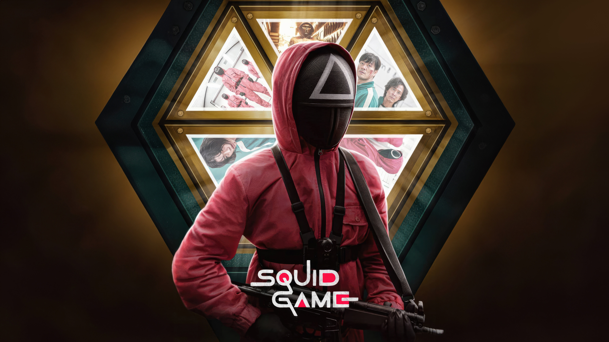

The series revolves around a secret contest where 456 players, all of whom are in deep financial hardship, risk their lives to play a series of deadly children's games for the chance to win a ₩45.6 billion prize. The series' title draws from a similarly named Korean children's game. Hwang conceived the idea based on his own economic struggles, as well as the class disparity in South Korea and capitalism.[4][5] Though he wrote the story in 2009, Hwang could not find a production company to fund the idea until Netflix took an interest around 2019 as part of a drive to expand their foreign programming offerings.
Seasons
Season-1
Episode-1
1. Red Light, Green Light
Hoping to win easy money, a broke and desperate Gi-hun agrees to take part in an enigmatic game. Not long into the first round, unforeseen horrors unfold.
Episode-2
2. Hell
Split on whether to continue or quit, the group holds a vote. But their realities in the outside world may prove to be just as unforgiving as the game.
Episode-3
3. The Man with the Umbrella
A few players enter the next round — which promises equal doses of sweet and deadly — with hidden advantages. Meanwhile, Jun-ho sneaks his way inside.
Season-2

Episode-1
1. Stick to the Team
As alliances form among the players, no one is safe in the dorm after lights-out. The third game challenges Gi-hun's team to think strategically.
Episode-2
2. A Fair World
Gi-hun and his team take turns keeping guard through the night. The masked men encounter trouble with their co-conspirators.
Episode-3
6. Gganbu
Players pair off for the fourth game. Gi-hun grapples with a moral dilemma, Sang-woo chooses self-preservation and Sae-byeok shares her untold story
Season-3
Episode-1
1. VIPS
The Masked Leader welcomes VIP guests to the facility for a front-row viewing of the show. In the fifth game, some players crack under pressure.
Episode-2
2. Front Man
Ahead of the last round, distrust and disgust run deep among the finalists. Jun-ho makes a getaway, determined to expose the game's dirty secrets.
Episode-3
3. One Lucky Day
The final round presents another cruel test — but this time, how it ends depends on just one player. The game's creator steps out of the shadows.